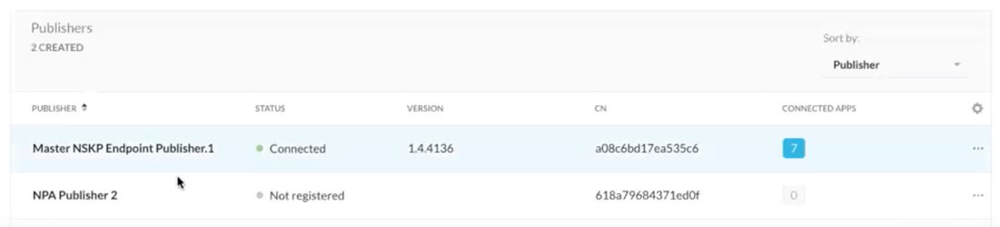
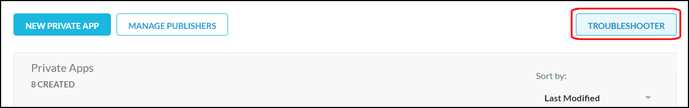

Private Access FAQs
What is the Netskope Private Access Gateway?
The Private Access Gateway provides both control and transport functionality. It delivers application authentication and authorization info to the Client, including the SRP (application authorization and routing info) and also serves as the first entry to the Netskope NewEdge infrastructure for Netskope Private Access. It transports all Private Application traffic following authentication.
What services and polling interval does a Publisher use to check if a private app/service is available?
The polling interval is about 1 minute.
The Publisher will try to connect to a configured port on a private app to check whether the private app is reachable.
Important factors to consider:
The Publisher works best when you define private apps is defined by hostname (e.g.,
jira.globex.io) and port (e.g.,8080).When an app is specifies with multiple ports or a port range, the Publisher will use only the first port from the list or range to check availability. For example, port range 70-90 will return unreachable, even if you are listening on port 80, because the only port that will be checked is 70 (this is a known limitation).
If an app definition specifies multiple ports and/or port ranges, it will check whether any of them is reachable. For example, if you specify 22, 70-90, if it’s able to reach port 22, it will mark the app as reachable.
The Publisher can't check reachability for private apps that are defined with a wildcard (
*.globex.io) or CIDR block (10.0.1.0/24). It also does not check reachability of apps with port ranges defined (3305-3306).
How do I return to the setup menu during a Publisher SSH session?
From the /home/ubuntu folder, enter sudo ./npa_publisher_wizard.
Can Publisher connections be proxied/TLS terminated?
No. The Publisher does not support explicit proxy. The Publisher does SSL pinning for the registration process and server-side certificate authentication against a specific certificate.
If a transparent SSL/TLS interception device is deployed inline, the destination needs to be whitelisted/bypassed allowlisted/bypassed (*.npa.goskope.com).
How does Netskope handle the connection of an application when the end user terminates a session?
Netskope will terminate the end to end tunnel between the Publisher and the end application upon session termination in SSH and other TCP based flows.
How do I SSH into the AWS Publisher?
If deployed in AWS, you will assign the AMI a KeyPair.pem that you already have (or generate a new one) during the provisioning of the Publisher.
ssh -i <Path To Your KeyPair.pem file> ubuntu@<External IP Address of Publisher>
ubuntu is the default username for the Publisher. (Please notice that it's different from ec2-user, which is the default username for Amazon AWS AMIs).
After successfully connecting via SSH to the Publisher, you will see an interactive CLI menu (below). You can choose option 3 to be placed into a normal UNIX CLI for additional troubleshooting. Go here for troubleshooting tips.
 |
To get back to the interactive CLI menu after exiting, use $ sudo ~/npa_publisher_wizard.
How do I SSH into the VMWare Publisher?
ssh ubuntu@<External IP Address of Publisher>Default password: ubuntu
You will be required to change the password after first login.
Do Publishers support Active-Active in the event there are multiple Publishers that have access to the same Private App?
Publishers work in Active-Active mode. Active-Active mode enables higher throughput. Up to 16 publishers are supported in an Active-Active deployment per app. A round-robin algorithm is used to spread Netskope Clients across publishers.
What happens if the Publisher registration token is corrupted during the initial deployment stage? Can I reset it locally at the Publisher?
If the registration failed (for example, because you missed a digit from the registration code), you can SSH into the Publisher and provide a new registration token.
If the registration succeeded, but you decided to register the Publisher with another token, this is not officially supported and not advised. You will need to reinstall the Publisher.
What are the requirements for deploying a Publisher into a VMware environment?
General Host Requirements
4 CPUs
8GB RAM
8GB HDD space
Networking Services
Network:
Publishers should have network connectivity to your internal apps.
Publishers should have network connectivity (outbound) to the Internet to reach various Netskope services: configuration, gateways, upgrade, and other service endpoints.
DNS:
Publishers should be able to resolve internal service names, for example:
myapp.example.com.Publishers should be able to resolve external service names (on the Internet), including the various Netskope services: configuration, gateways, upgrade, and other service endpoints.
SSH:
You should be able to SSH into the Publisher from an internal desktop computer for basic administration tasks, such as passing the registration token to the Publisher during initial setup and troubleshooting any issues which might arise. A publisher cannot be used to connect to itself.
Note
If you deploy the Publisher VM into a network with DHCP services, it should pick up a valid networking configuration automatically, including an IP address, default gateway, and DNS.
If you deploy the publisher VM into a network without DHCP services, you must configure a static IP address, default gateway, and DNS.
My 2nd (or subsequent) Publisher shows as Connected to an older publisher record in the Netskope UI. Now what?
This could be a known issue. If you copied your new Publisher from an older (working) Publisher, then you've likely hit this issue. For example, creating an AMI image from a known working EC2 instance, and then launching a new instance from that AMI image, is an example of one way to hit this issue.
Please contact Netskope Support or create a new Publisher rather than copying an AMI or image.
Symptom of this issue
In the screenshot below, the new publisher named "NPA Publisher 2 is actually the instance that's running in AWS. However, that Publisher is reporting its status, version and CN in the record of the original publisher named Master NSKP Endpoint Publisher.1. (Note that the real AMI for the Publisher named Master NSKP Endpoint Publisher.1 is not running at the time this screenshot is taken.)
|  |
How to resolve this issue
SSH in to the new publisher.
Enter the following command:
sudo rm -rf resources ; sudo shutdown -r nowYou may need to restart the AMI from the AWS EC2 console.
After status checks are complete, refresh the Publisher status page in NSKP tenant.
Indication that you've cleared the bug is shown in the screenshot below:

How much bandwidth can a Publisher handle?
An individual Publisher can handle approximately 500 Mbps of throughput, and can handle approximately 32,000 concurrent UDP orTCP connections.
How much downtime should I expect during Publisher upgrades and/or failover to secondary Publisher?
Single Publisher: 1-3 minutes as the system is upgraded until the Publisher comes up.
HA Publishers: Less than 5 seconds as the traffic switches to the other Publishers in the app definition.
Can I re-enroll an existing publisher?
No. Re-enrolling a Publisher is not currently supported.
Can the Publisher utilize autoscaling functionality of the Cloud Service Provider if deployed in Azure, GCP, or AWS?
No. Autoscaling a Publisher is not currently supported.
Can syslog be setup on a Publisher?
Yes. The basic steps are:
SSH into the Publisher.
Select the menu option Configure syslog.
Provide the syslog server host/IP and port.
The Publisher restarts to apply the settings, and sends these entries to the configured syslog server.
For Private Application allowlisting, what IP Address is seen at the Private App level from NPA?
The Private Application Host will see the connection as originating from the IP address of the Publisher that is connecting to it. There is no range, but depending upon the number of Publishers used to connect to the Private Application Host, you will need to allowlist each of those IP addresses.
What ports are required for the NPA to work correctly?
These URLS will change in the future, but for now use the original domain configuration.
Component | URL | Port | Notes |
|---|---|---|---|
Client |
| TCP 443 (HTTPS) | |
Publisher |
| TCP 443 (HTTPS) UDP 53 (DNS) | DNS is not required to be allowed outbound if there is a local network DNS server internally. |
Client and Publisher |
Contact your Netskope SE, TSM, or Support for your tenantid and mp-name. | TCP 443 (HTTPS) | This is needed one time only during the registration. Example URL: MP-Name Variables:
|
I'm not certain what TCP/UDP ports my application needs in order for it to work. What can I do?
To connect users with applications/services, an NPA administrator must configure Private App policies within the Netskope UI in a few places. Here are the configuration options and details for known application/service types.
Application | Protocol/Port | Factors |
|---|---|---|
Web Traffic | TCP: 80, 443 (custom ports: 8080, etc.) UDP: 80, 443 | Google Chrome will use the QUIC protocol (HTTP/S over UDP) for some web applications, so duplicating the web browsing ports for both TCP and UDP can provide a performance improvement. |
Secure Shell (SSH) | TCP: 22 | |
Remote Desktop (RDP) | TCP: 3389 UDP: 3389 | Some Windows RDP client apps (in particular, newer Windows 10 versions) will now prefer to use UDP:3389 to perform Remote Desktop connectivity. |
Windows SQL Server | TCP: 1433, 1434 UDP: 1434 | The default port for Windows SQL Server is 1433, though this can be customized in your environments. Refer to the Microsoft documentation for more details: Configure the Windows Firewall to Allow SQL Server Access. |
MySQL | TCP: 3300-3306, 33060 TCP: 33062 (for admin specific connections) | For general MySQL connection use cases, only port 3306 is required, but some customers may take advantage of the additional MySQL feature ports. Netskope recommends using a port range for MySQL database private apps. MySQL will block connections from the NPA Publisher because it detects the reachability test as a potential attack. Using a range in the port configuration will result in the NPA Publisher performing a reachability check only on the first port in the range and therefore prevent MySQL from seeing this traffic and avoiding the port block. Refer to the MySQL documentation for more details: MySQL Port Reference Tables. |
For further specifics, please reach out to your Netskope Technical Success Manager or Sales Engineer for assistance.
Can NPA tunnel protocols and ports outside the common ones listed above?
Yes. NPA can tunnel apps outside of that list. NPA supports both the TCP and UDP protocols and all associated ports, with one notable exception: Netskope does not currently tunnel most DNS traffic, but we do support tunneling DNS SRV lookups over port 53. This is needed for service discovery, which is used in various Windows AD scenarios involving LDAP, Kerberos, etc.
Note
Sometimes applications like VoIP can be problematic. Not so much due to tunneling, but rather configuration. For example, applications that perform dynamic port allocation when establishing a connection can be problematic, because an admin cannot know which ports will be set up by the service end of the application in advance, so there's no way to know what ports to specify.
What protocols and ports can NPA tunnel for Private Applications?
NPA can support any client to server TCP and UDP traffic.
Can NPA tunnel ICMP?
No. NPA does not tunnel ICMP, only TCP and UDP. So you cannot ping or traceroute over NPA to test network connections. To quickly checkwhether NPA steering is working for a private application defined by FQDN,from a command prompt/Terminal window, enter: nslookup<FQDN_of_Private_App>. You can utilize tcping, psping, or other tcp based tools to test connectivity.
Does NPA support tunneling connections established from a private app to a Client?
No. NPA does not support protocols that establish connections from a private app to a Client. For example, FTP Active mode is not supported.
How does the the Netskope Client check for configuration updates?
The Client auto checks for updates as set by the administrator or end user.
Does the Client send state changes for updated authentication?
Yes. The Client provides both periodic and dynamic updates, such as device classification, authentication status, and user to the controller for authorization information.
Does NPA support push operations or server to client initiated traffic?
No. NPA does not support protocols that establish connections from a private app to a client.
Does NPA support VoIP or Soft Phones?
VoIP requires usage of Session Border Controllers in order to traverse NAT. We’ve discovered that many customers do not have Session Border Controllers deployed as they are not required for enterprise VoIP deployments. However without them, VoIP support with NPA is not possible.
Does NPA publisher support Explicit Proxy environment?
No. The NPA Publisher cannot be configured to connect to the Netskope Cloud via explicit proxy.
Some Netskope components such as the Publisher, Cloud Exchange, and Log Shipper run on Docker containers. Can we run the other components on the Publisher VM?
No. Running other containers on the Publisher virtual machine is not supported. This includes Netskope and third-party Docker containers.
Can the Publisher host have multiple interfaces across multiple networks?
Yes. You can run the Publisher with more than one interface across multiple networks.
What is a good method for troubleshooting accessibility issues to a private app/service behind a Publisher?
The first best option is to use the Troubleshooter. Click Troubleshooter located on the Private Apps page.
|  |
Choose the private app and device you are trying to access, and then click Troubleshoot.
The Troubleshooter renders the list of executed checks, problems which may affect your configuration, and solutions for these problems.
 |
Note
Troubleshooter has about a dozen of checks now. However, there are multiple additional conditions which could affect access (which Troubleshooter doesn't check). As a result, it is useful to be able to run some of the checks manually.